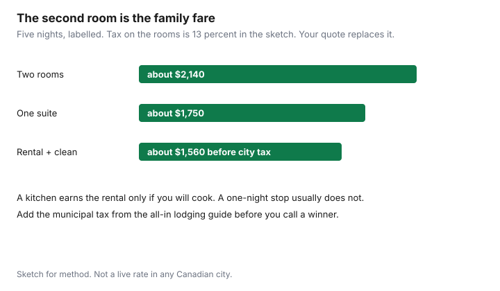

Travel · Canada
Family Vacation Budgeting in Canada: Kids’ Fares, Lodging, and the True Per-Day Cost
Family trips do not get expensive at the postcard. They get expensive when an adult fare is multiplied by every child who needs a seat, and a hotel room is multiplied because four people do not fit in one queen bed. The households who stay inside a number build that number first: seats, beds, food, one paid outing a day. The destination is what fits the number, not the other way around.
Fare rules below were read from Air Canada and WestJet on 23 Sep 2026. Lodging dollars are a labelled sketch so the method is visible. Your quote replaces them. Medical insurance is named, then handed to the Insurance guide. This page does not re-teach what a provincial plan pays.
Disclosure: Hotel booking sites and sun-destination package sites are offer types. Saving Optimizer may earn a commission if we later add those links. We do not currently claim a hotel, airline, or tour partnership. Education only.
Key takeaways
- Within Canada, Air Canada charges the adult fare for a child over 2 in their own seat. A lap infant under 2 needs a ticket and, inside Canada, no fare charge. Canada–U.S. lap infants pay taxes. Other international lap infants are about 10 percent of the adult fare, taxes extra.
- WestJet: children 2 and older need their own seat at the going fare. Lap infants under 2 generally have no base fare; U.S. government fees and some international taxes can still appear. One lap infant per adult.
- If a child turns 2 between the outbound and the return, the return is a paid seat. Book that before the airline does it for you at the last minute.
- Two connecting rooms can cost more than a suite or a rental with a kitchen once tax and a week of restaurant breakfasts are in both columns. Use the all-in lodging guide for the tax stack.
- Cap paid outings at one a day. Grocery breakfasts and leftovers are the food plan, not a punishment.
- Write per person per day only after the trip total exists. Then put travel medical on its own line and follow the Insurance guide. Do not invent a medical limit here.
Airline kid fare and lap-infant rules on AC/WestJet for your ages
Write each traveller’s age on the travel dates, not today. The birthday that falls during the trip is the one that changes the fare.
Air Canada’s travelling-with-children page, read 23 Sep 2026:
- Within Canada. Infant under 2 on a lap: a ticket is required, no fare charge. Infant in their own seat: adult fare. Child over 2: own seat, adult fare.
- Canada and the United States. Lap infant: ticket required, taxes only. Own seat: adult fare, for both the infant and the child over 2.
- Other international. Lap infant: about 10 percent of the adult fare. The discount does not apply to taxes, fees, and surcharges. Own seat for a child under 12: the child’s fare. Age 12 and up: adult fare.
If the second birthday falls between the outbound and the return on an international trip, Air Canada says you either pay the child’s fare both ways so the seat is confirmed, or you pay the infant fare out and the child’s fare back and you book that by phone. A domestic trip has the same practical problem: the return segment is a child who needs a seat at the adult fare. Do not wait for the airport to discover the birthday.
WestJet’s family page, same day: lap-held infants under 2 do not pay a base fare on most routes. Some international destinations charge infant taxes. Flights to the United States may include government fees. An infant who needs their own seat pays the fare, and you should say so if you are bringing a car seat. Children aged 2 and older need their own seat. Children 4 and under must travel with someone who is at least 16. Children 5 to 11 must travel with someone who is at least 12. Each adult may be responsible for one lap infant, and two lap infants cannot share a row because of oxygen-mask limits. WestJet’s domestic tariff prices the unaccompanied-minor program at $100 CAD per direction for minors who qualify, on itineraries that are nonstop within Canada. It is mandatory for ages 8 to 11 travelling without an accompanying passenger who is at least 12, and it is not offered on international itineraries. A family vacation is usually accompanied. The fee matters when one child is sent ahead to a grandparent.
Bags multiply with seats. A lap infant’s diaper bag is an extra article on both airlines’ family pages, and some infant equipment checks free. A six-year-old’s fare does not include a parent’s second roller. The packing system is the checked-bag guide. Seat selection is a separate charge on many fares. One statutory exception is worth using: the Air Passenger Protection Regulations require airlines to seat a child under 14 near a parent, guardian, or tutor at no extra charge, either in advance or by moving people at check-in or the gate. You should not have to buy four seat fees solely to sit with a seven-year-old. You may still choose to pay for a specific row. Those are different purchases.
| Traveller | Air Canada | WestJet |
|---|---|---|
| Under 2, on a lap, within Canada | Ticket, no fare charge | No base fare on most routes |
| Under 2, on a lap, to the U.S. | Taxes on the ticket | Government fees may apply |
| Under 2, own seat | Adult fare inside Canada and to the U.S. | Fare, taxes, and fees |
| Age 2 to 11, within Canada | Adult fare | Own seat, standard fare |
| Age 12 and up | Adult fare | Adult rules |
A labelled seat count for two adults and two children aged 6 and 9, inside Canada: four adult fares. The infant cousin is not a discount on those two. If each adult fare is $320 return, the flying total is $1,280 before bags and seat fees, not $640. That arithmetic is why “the kids fly free” advice from another country does not survive contact with a Canadian domestic tariff.
Room maths: two hotel rooms vs suite vs STR with kitchen
One hotel room holds two adults and, sometimes, one small child on a cot the hotel still charges for. Two children who sleep like humans usually mean a second room, a suite, or a short-term rental. Compare all-in totals for the same nights. The tax and cleaning-fee method is the Airbnb versus hotel guide. Do not stop at the nightly rate on the search card.
| Lodging | Sticker | Five-night sketch | What you are buying |
|---|---|---|---|
| Two standard rooms | $189 × 2 per night, plus tax | about $2,140 if tax is 13 percent | Two bathrooms, no kitchen, two sets of resort or parking fees |
| One suite | $310 per night, plus tax | about $1,750 at the same tax | One booking, a door that closes, sometimes a microwave |
| Rental with kitchen | $240 a night plus a $180 clean, plus tax | about $1,560 before the municipal tax the other guide catches | Groceries, a table, and house rules about noise and cots |
The suite wins the sketch against two rooms. The rental wins on beds and food only if you will cook. A rental that is a 25-minute drive from everything adds a car the hotel did not need. Points and member benefits, if you care about them, usually require booking the hotel direct. That trade is the direct versus portal guide. For a family week, loyalty is a tie-break after the all-in price, not a reason to pay for two rooms you do not need.

Food plan that assumes leftovers and grocery runs
Four people in a restaurant three times a day will spend more than the second hotel room you just avoided. Plan food the way you plan a work week at home, with one meal that is allowed to be fun.
- Breakfast in the room or the rental: yogurt, fruit, eggs, oatmeal. A hotel that includes breakfast for four can be worth more than a $20 rate gap. Read who is included. “Kids eat free” with a 12-year-old excluded is a parent price.
- Lunch as leftovers or a grocery picnic. Buy dinner ingredients for four on day one, cook once, eat twice.
- One restaurant meal a day, with a cap written down. Tourist strips price the children’s menu like a small adult meal. A grocery rotisserie chicken and a bagged salad is a legitimate dinner.
- Snacks in the bag so a viewpoint does not become a $18 muffin stop. The muffin is allowed. It is not the plan.
A labelled food week for four, groceries plus one modest dinner out each day, might be $700–$900. The same week with every meal seated can clear $1,600 before anyone orders dessert. Use your city. The ratio is the lesson. If the lodging you chose has no fridge, you do not have this plan. That belongs in the room decision above, not as a surprise on night two.
Activity prioritization: one paid highlight per day max
Children remember one thing they chose, not a schedule that was a purchased list. Put one paid highlight on each day and fill the rest with walking, swimming where it is free or already in the hotel, and time that is not monetized.
The rule is a budget rule. A $90 per person exhibit, times four, is $360. Two of those in a day is a car payment. One a day, five days, is $1,800 in this example, which you then either accept or cut to three paid days and two park days. Write the three you would be sad to miss. Book those. Let the fourth brochure go.
Free and low-cost still need a line if they need a shuttle, a parking meter, or a packed lunch. Zero is a number you confirm, not a mood. A national-park day has admission. A city museum morning may be free for youth and not for you. Price the adults.
Build a per-person per-day number before picking the destination
Pick the number the household can spend. Then see which week fits. A destination-first search always finds a flight that looks reasonable and a room that does not.
Add, for the whole trip: fares for every seat, bag fees you will actually incur, lodging all-in, food, local transport or a car, and the paid highlights. Divide by the number of days you are away, including travel days if those days cost meals and a hotel. That is the daily total. Divide by people only when you are comparing this trip with another trip or with staying home. A family of four at $400 per person for five days is a $8,000 trip. Saying “$400 a person” without the multiplication is how the trip gets approved and the card gets the bill.
| Line | Amount |
|---|---|
| Four return fares at $320 | $1,280 |
| One checked bag, both ways, at $45 before tax | $90 |
| Suite, five nights, from the sketch above | $1,750 |
| Food, cooler plus one dinner | $800 |
| Three paid highlights at $80 × 4 people, two free days | $960 |
| Trip total | $4,880 |
| Per day (5) | about $976 |
| Per person per day | about $244 |
If $244 per person per day is more than the household wanted, change a line you control: fewer paid days, a kitchen instead of dinners, a destination that does not need four airfares. Do not change the arithmetic. A driving week uses the road-trip sheet in place of the fare line. A mountain week uses the Banff and Jasper sheet. The per-person figure is what lets you compare them without pretending they are the same vacation.
Where travel medical and docs fit—link Insurance; do not rehash GHIP gaps
If the week leaves Canada, or even leaves your home province, the medical line is not a rounding error and it is not taught here. Provincial coverage outside the province is limited. The decision guide is on the Insurance hub: why provincial plans barely cover you abroad. Buy the policy with that method. Drop the premium into this sheet as its own row so a $180 family policy does not hide inside “miscellaneous.” A credit-card medical benefit, if you already have one, is something you read for the cap and the pre-existing exclusion. It is not a reason to skip the Insurance page, and this guide will not rank cards.
Documents are the other row, usually at $0 and occasionally at the cost of a delayed departure. Each person who needs a passport needs a passport that is valid for the whole trip and for as long as the destination requires after you leave. Children travelling with one parent, or with grandparents, should carry the consent paperwork the border expects. Travel.gc.ca publishes the consent-letter practice. Follow that, not a screenshot from a group chat. This is not legal advice. It is a reminder that a missing letter is not a hotel problem.
Put medical and documents on the same checklist as the fares. Then the per-day number is a number you can actually travel on.
Sources & date stamps
- Air Canada, travelling with children — infant and child fare table for Canada, Canada/U.S., and other international routes; second-birthday note. Used 23 Sep 2026.
- WestJet, children and family, and the domestic tariff (infant and unaccompanied-minor rules, including $100 CAD per direction on the domestic unaccompanied program). Used 23 Sep 2026.
- Air Passenger Protection Regulations, SOR/2019-150, section 22 — seating a child under 14 near a parent, guardian, or tutor at no additional charge. Consolidated text used 23 Sep 2026.
- Lodging and food figures in the tables are labelled sketches for method, not quotes. Tax treatment of short-term rentals is handled in the all-in lodging guide.
- Travel medical depth is intentionally not repeated. See the Insurance guide linked above.
Frequently asked questions
Do children pay the adult fare on Air Canada inside Canada?
Yes, once they need their own seat. Air Canada’s family page says a child over age 2 pays the adult fare within Canada and between Canada and the United States. An infant under 2 on a lap is a ticket with no fare charge within Canada. On Canada-U.S. flights the lap infant pays taxes. On other international flights the lap infant is about 10 percent of the adult fare, and taxes and surcharges are extra. A child fare, where it exists, applies under age 12. From 12, it is the adult fare.
What does WestJet charge for a lap infant?
WestJet’s family page says a lap-held infant under 2 pays no base fare on most routes. Some international destinations charge infant taxes, and flights to the United States can include government fees. An infant in their own seat pays a fare. Children aged 2 and older need their own seat. Each adult may be responsible for one lap infant.
Is a suite or a rental with a kitchen cheaper than two hotel rooms?
Often, once you are paying for two rooms so the children are not on a cot. Compare the all-in totals: two rooms with tax, a suite with tax, and a short-term rental after cleaning fees and the municipal tax. A kitchen earns its keep when it replaces restaurant breakfasts and lunches. It does not earn its keep on a one-night stop.
How do we get a per-person per-day number?
Add fares, bags, lodging, food, local transport, and one paid activity per day. Divide by nights for a daily total, then by people only if you are comparing trips. Do the sum before you fall in love with the destination. A cheap flight into a town that needs two rooms and a car can lose to a costlier flight into a walkable week.
Where does travel medical fit?
Outside this sheet’s lesson. Provincial plans pay little of a foreign hospital bill. The buying method is the Insurance guide on provincial gaps. Add the premium as its own line so it is not hidden inside the hotel. Carry passports and, when one parent travels alone with the children, the consent letter your border paperwork needs. This page is not legal advice.